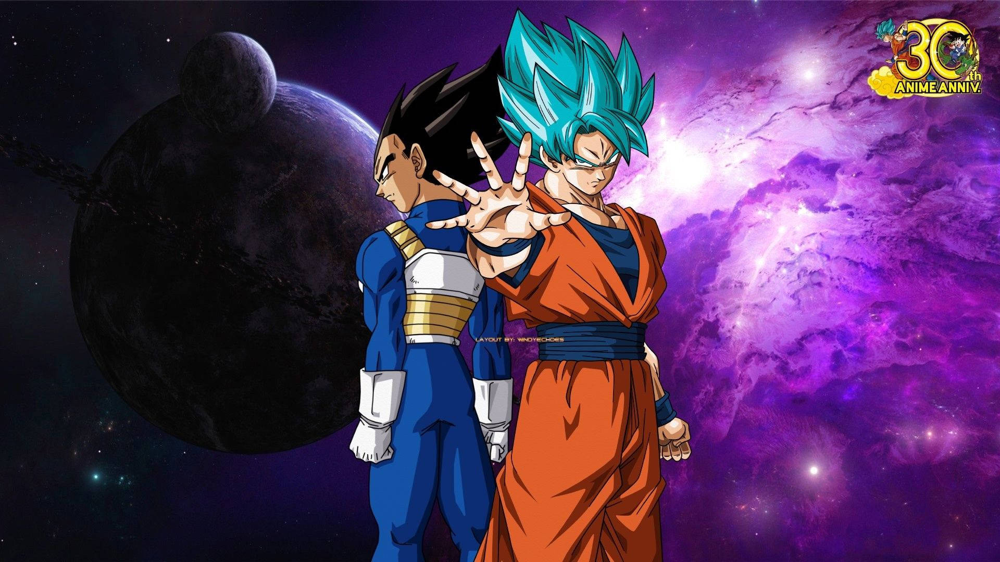

El Regreso de Goku y Vegeta: ¿Qué Hace a Dragon Ball Super Tan Especial?

Dragon Ball Super marcó el regreso triunfal de una de las franquicias más icónicas en el mundo del anime. Tras el final de Dragon Ball Z, muchos fans pensaron que la historia había llegado a su conclusión, pero Akira Toriyama sorprendió a todos al traer de vuelta a Goku y Vegeta con nuevas aventuras.
La serie no solo presentó nuevas transformaciones y enemigos poderosos, sino que también expandió el universo de Dragon Ball introduciendo conceptos como los Dioses de la Destrucción y el Multiverso.